Latihan langkah demi langkah memakai DB-Ex: foto core box, data bor, AI lokal untuk geoteknik, overlay assay, singkapan & trenching, serta borang lapangan (Ore Spotter, Daily Drilling Report) ke Excel, SQLite dan MS Access. Seluruh data latihan fiktif.
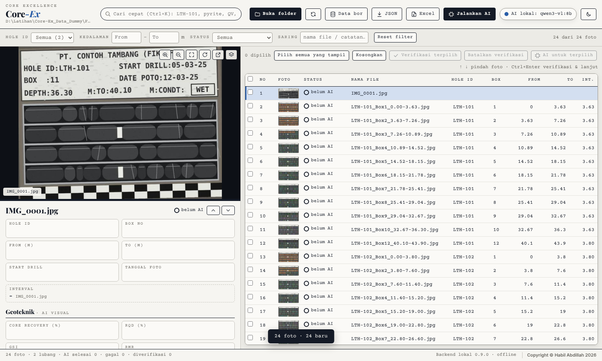
Isi
0. Persiapan: aplikasi, Ollama, data dummy
1. Buka folder foto core box
2. Import data bor (Collar, Survey, Assay, Geologi)
3. Jalankan AI lokal
4. Baca kartu foto: geoteknik vs logging
5. Periksa, edit, verifikasi
6. Overlay assay di foto & atur area core
6b. Tandai half core & core loss
6c. Overlay berlapis & edit interpretasi per baris
Pasang DB-Ex. Jalankan DB-Ex-Setup-<versi>.exe (tidak perlu hak admin). Saat pertama dibuka, setujui Syarat Penggunaan lalu aktifkan lisensi (lihat Tutorial Aktivasi Lisensi GC-Ex).
2
Pasang Ollama dan satu model vision (sekali per komputer). Di komputer yang ada internet: pasang OllamaSetup.exe versi 0.12.7 atau lebih baru, lalu di Command Prompt jalankan ollama pull qwen3-vl:8b. Untuk komputer site tanpa internet, salin installer dan folder %USERPROFILE%\.ollama\models lewat flashdisk.
Model
Unduhan
Cocok untuk
qwen3-vl:8b (disarankan)
±6,1 GB
NVIDIA ≥ 8 GB VRAM, atau RAM ≥ 16 GB
qwen3-vl:4b
±3,3 GB
laptop biasa (RAM 8–16 GB), lebih cepat
3
Ekstrak data dummy. Ekstrak DB-Ex_Data_Dummy.zip, misalnya ke D:\Latihan\. Isinya:
Subfolder per lubang ikut dibaca. Hole ID, box dan kedalaman dibaca dari nama file, mis. LTH-101_Box3_7.26-10.89.jpg → LTH-101, box 3, 7,26–10,89 m.
IMG_0001.jpg (bergaya foto HP) tidak punya info di nama file; isiannya kosong dan nanti dibaca AI dari papan label.
Gambar 2 – Folder terbuka: pratinjau foto di kiri, tabel log di kanan, status di bilah bawah.
✓ Cek: bilah bawah menulis 24 foto · 2 lubang. Hasil kerja tersimpan di subfolder _GCEx_Core di dalam folder foto, jadi rekan yang membuka folder yang sama bisa melanjutkan.
Latihan 2
Import data bor
Klik Data bor di bilah atas. Ada empat tab: Collar, Survey, Assay, Geologi. Nama header bebas; DB-Ex menebak kolomnya, Anda tinggal memeriksa.
2a. Collar dan Survey
Tab Collar → Pilih file CSV / Excel… → Collar_Latihan.csv. Pemisah titik koma dan koma desimal dikenali otomatis.
Periksa Kolom utama: Hole ID = BHID, X = Easting, Y = Northing, Z = RL. Klik Import.
Ulangi di tab Survey dengan Survey_Latihan.csv.
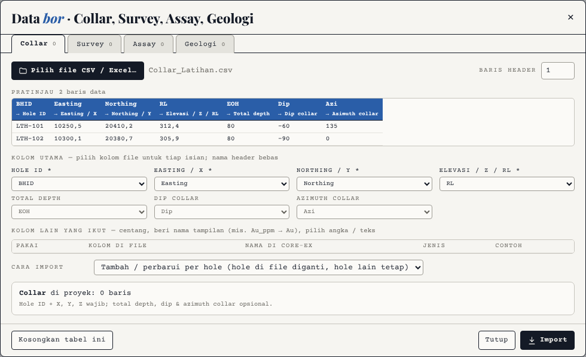
Gambar 3 – Tab Collar: pratinjau (biru = kolom utama) dan pemetaan kolom.
✓ Cek: Collar: 2 baris diimport · 2 hole. Survey: 5 baris · 2 hole cocok dengan foto.
2b. Assay (header dinamis)
Tab Assay → Assay_Latihan.xlsx. Baris judul laporan lab dilewati; Baris header terdeteksi di baris 3.
Di Kolom lain yang ikut, beri nama pendek: Au (ppm) → Au, Ag (ppm) → Ag, Cu (%) → Cu, Sample No → Sample. Hilangkan centang Lab_Stat.
Cara import: Tambah / perbarui per hole. Klik Import.
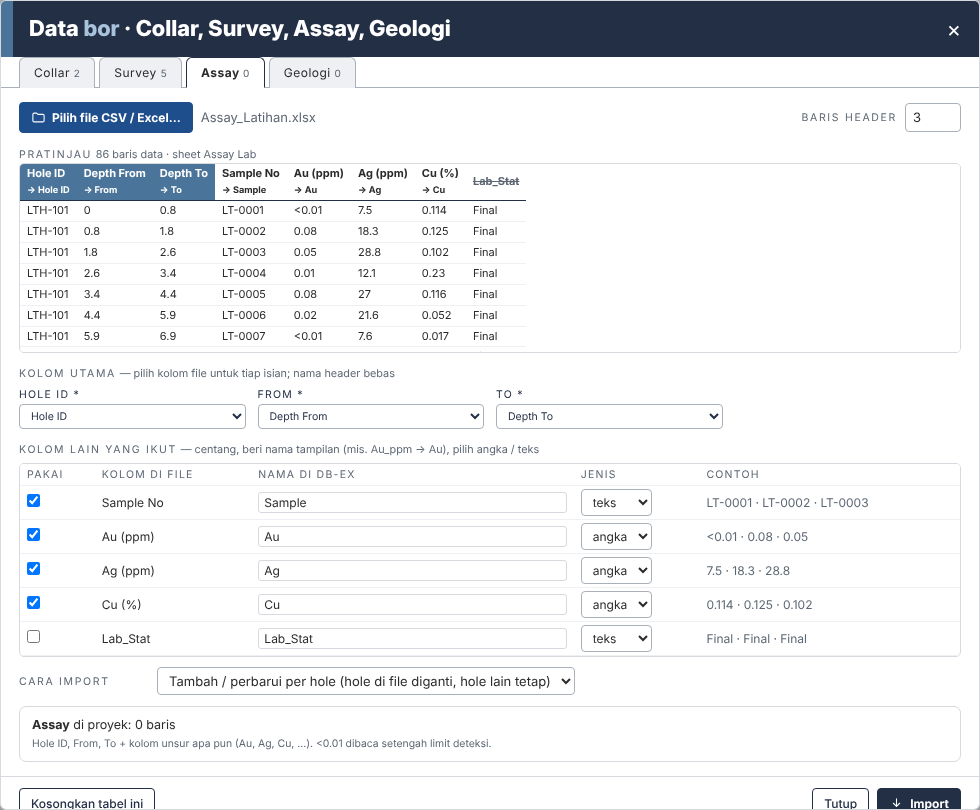
Gambar 4 – Nama kolom diganti sebelum import.
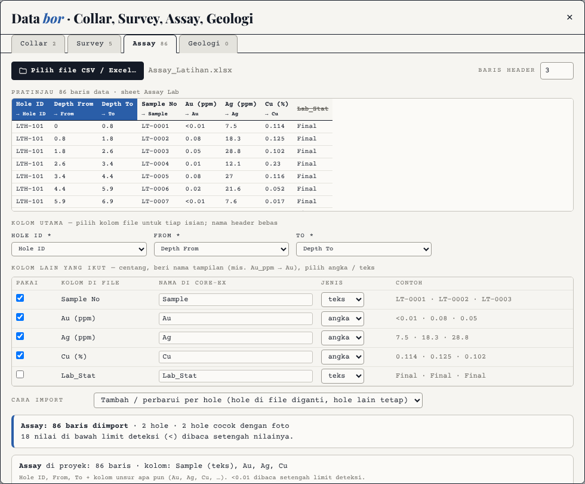
Gambar 5 – Ringkasan hasil import assay.
✓ Cek: 86 baris diimport · 2 hole · 18 nilai di bawah limit deteksi (<) dibaca setengah nilainya. Nama unsur yang Anda beri (Au) dipakai di pencarian dan filter.
✓ Cek: 6 baris · 1 hole (hanya LTH-101 yang sudah dilogging). Tutup dialog dengan Esc.
Latihan 3
Jalankan AI lokal
Pastikan titik di kanan atas berwarna biru: AI lokal: qwen3-vl:8b. DB-Ex menjalankan Ollama sendiri saat dibuka; bila masih merah, klik Jalankan Ollama di dialog AI.
Klik Jalankan AI. Dialog menampilkan versi Ollama dan model vision yang terpasang; model yang tidak bisa melihat gambar tampil abu-abu.
Biarkan ukuran foto 1600 px (seimbang). Kolom Instruksi tambahan boleh diisi aturan proyek, mis. kode litologi.
Klik Analisis foto yang belum (24).
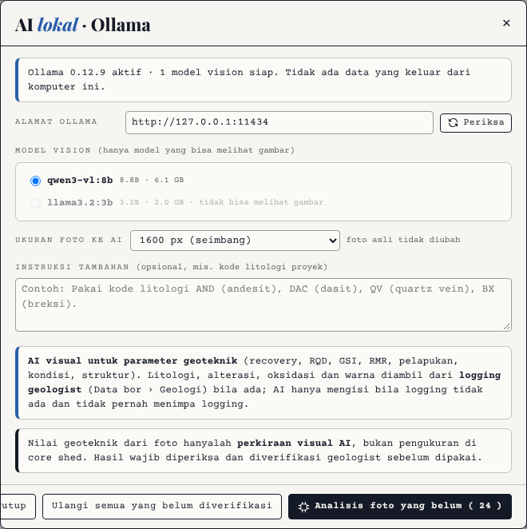
Gambar 7 – Dialog AI lokal.
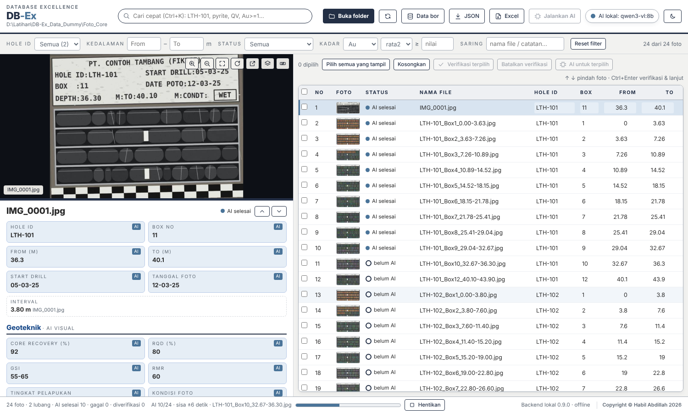
Gambar 8 – Antrean berjalan; bilah kemajuan dan tombol Hentikan di bawah.
Hasil tiap foto langsung tersimpan. Aplikasi boleh ditutup di tengah jalan; jalankan lagi untuk melanjutkan yang belum. Perkiraan waktu: GPU 8 GB ±5–20 detik per foto, hanya CPU ±1–3 menit.
✓ Cek: bilah bawah menulis AI selesai 24 · gagal 0. Foto yang gagal diulang otomatis saat AI dijalankan lagi.
Latihan 4
Baca kartu foto: geoteknik vs logging
Klik baris IMG_0001.jpg di tabel (atau ketik IMG_0001 di kotak Saring). AI membaca papan label: HOLE ID LTH-101, BOX 11, DEPTH 36.30 → M:TO 40.10, START DRILL dan DATE POTO.
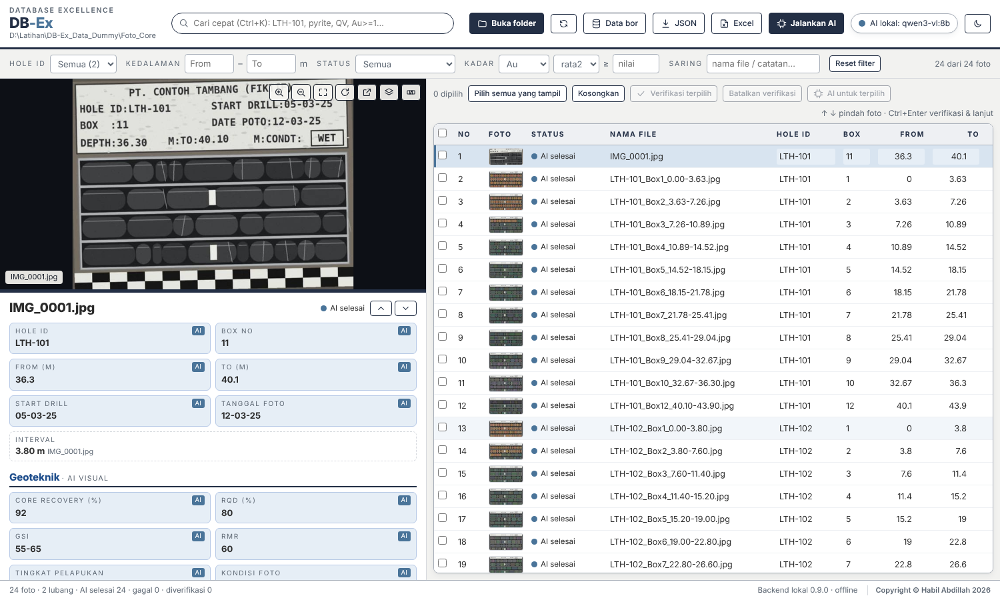
Gambar 9 – IMG_0001: isian identitas dibaca AI dari papan label.
Arti label di setiap isian:
AI sel biru muda = isian AI yang belum dicek geologist.
logging = dari logging geologist (Data bor › Geologi); tidak bisa ditimpa AI.
diedit = sudah diubah geologist; tidak pernah ditimpa AI walau dijalankan ulang.
Gulir kartu ke bawah. Bandingkan dua lubang:
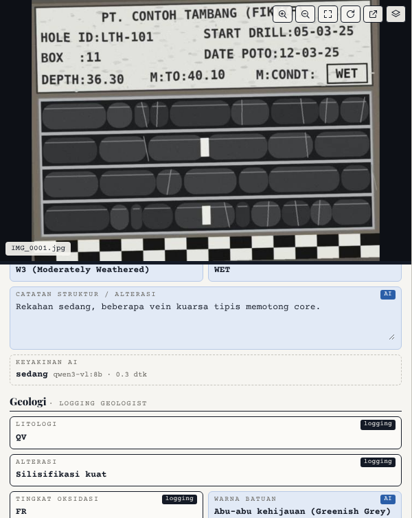
Gambar 10 – LTH-101 (sudah dilogging): Litologi QV, Alterasi Silisifikasi kuat, Oksidasi FR bertanda logging; warna batuan masih dari AI karena tidak ada di logging.
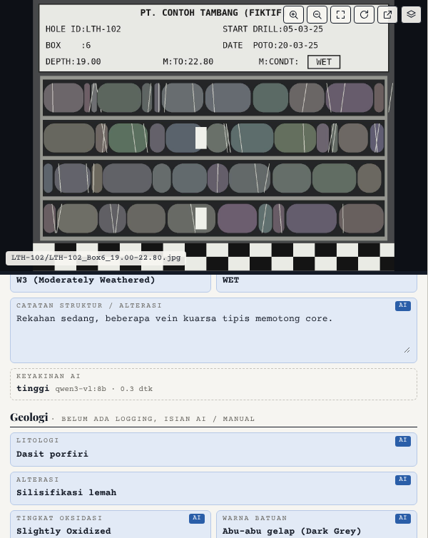
Gambar 11 – LTH-102 (belum dilogging): judul "belum ada logging, isian AI / manual"; semua isian geologi dari AI.
Di bagian Data lab kartu (gulir ke bawah) tampil koordinat collar, koordinat X, Y, Z di From dan To foto (dihitung dari survey), serta tabel assay dan geologi di rentang foto itu.
Latihan 5
Periksa, edit, verifikasi
Pilih Hole ID LTH-101 di filter. Pratinjau lompat ke box 1.
Ubah RQD (%) menjadi 62, tekan Tab. Labelnya berubah menjadi diedit.
Tekan Ctrl+Enter (Verifikasi & lanjut). Status baris menjadi diverifikasi dan pratinjau pindah ke foto berikutnya.
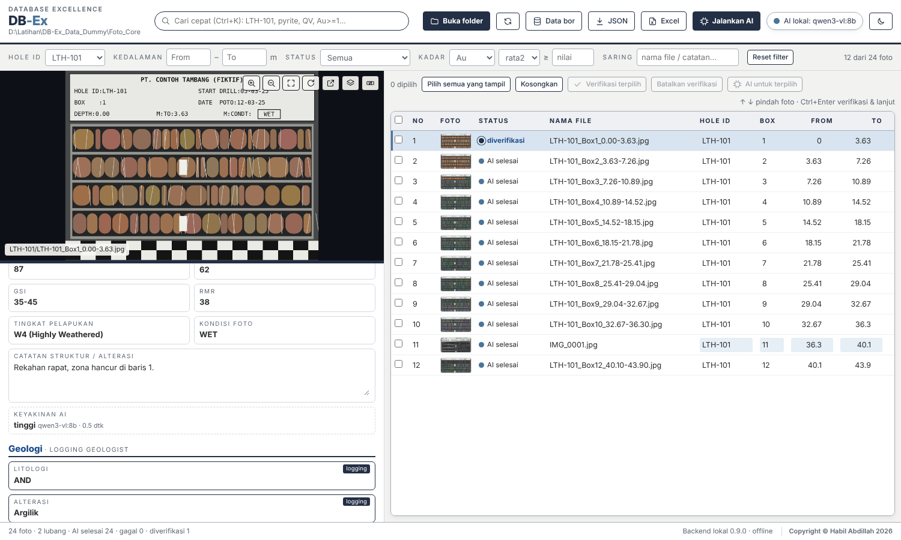
Gambar 12 – LTH-101 box 1 terverifikasi. Banyak foto sekaligus: centang di kolom kiri → Verifikasi terpilih.
✓ Cek: bilah bawah: diverifikasi 1. Riwayat setiap perubahan (nilai lama → baru, siapa, kapan) ada di bawah kartu.
Latihan 6
Overlay assay di foto & atur area core
Buka lagi IMG_0001.jpg. Klik ikon lapisan (tumpukan) di pojok kanan atas pratinjau.
Pita assay muncul di atas tiap baris core dengan warna kelas kadar, pita geologi (Lith) di bawahnya, dan kedalaman di awal/akhir baris.
Di strip bawah foto: pilih unsur Au, kelas 0.1, 0.5, 1, 3, kolom geologi Lith.
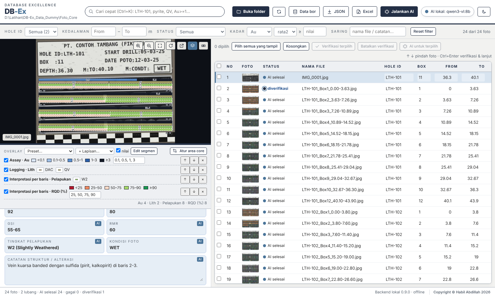
Gambar 13 – Overlay Au dan Lith pada IMG_0001 (box 11, 36,30–40,10 m): zona QV berkadar tinggi.
Bila pita tidak pas dengan core, klik Atur area core: tarik sudut kotak biru, isi jumlah baris, lalu simpan untuk foto ini, semua foto lubang ini, atau bawaan proyek.
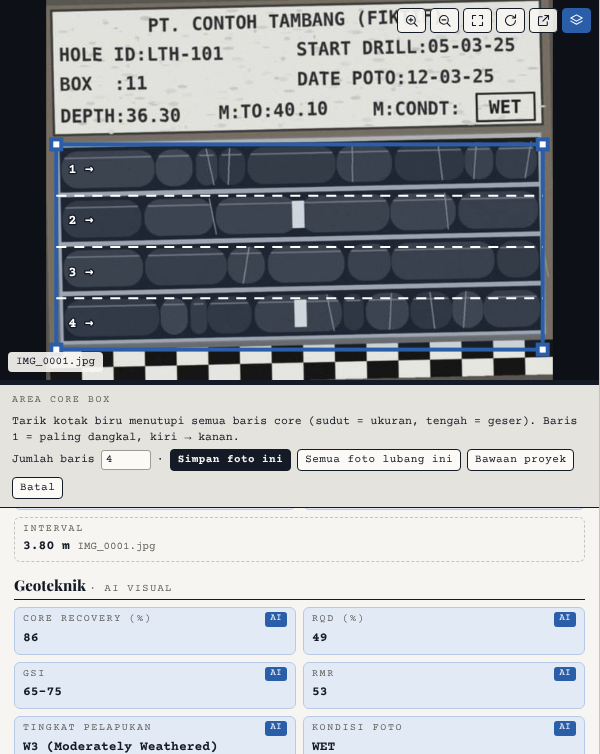
Gambar 14 – Atur area core.
Posisi pita adalah perkiraan: interval box dibagi rata ke jumlah baris. Bila core hilang atau panjang baris tidak sama, pakai penanda kedalaman di core block sebagai acuan akhir.
Latihan 6b
Tandai half core & core loss
Interval half core (dibelah untuk sampel) dan core loss ditandai langsung di foto. Core loss otomatis menghitung Core Recovery foto.
Buka IMG_0001.jpg (LTH-101 box 11, 36,30–40,10 m). Klik tombol tanda (ikon pita bergaris) di pojok kanan atas pratinjau.
Jenis Half core → Mulai menandai. Tarik di baris core ke-2 dari ujung kiri sampai tengah. Formulir terisi From 37,25 · To 37,75 dan No. sampel LT-0036 (diambil dari kolom Sample di assay). Isi catatan, lalu Simpan.
Ganti jenis ke Core loss, tarik di baris ke-3 dari 70% sampai 95% panjang baris (38,85–39,10 m), isi catatan, Simpan.
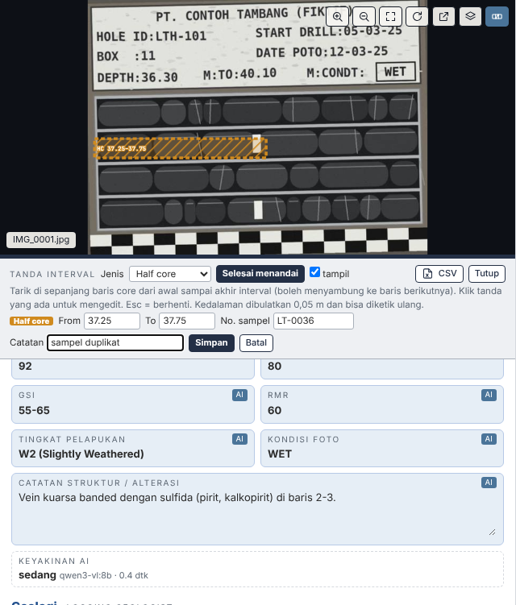
Gambar 21 – Menandai half core: kedalaman dan nomor sampel terisi otomatis, bisa diketik ulang.
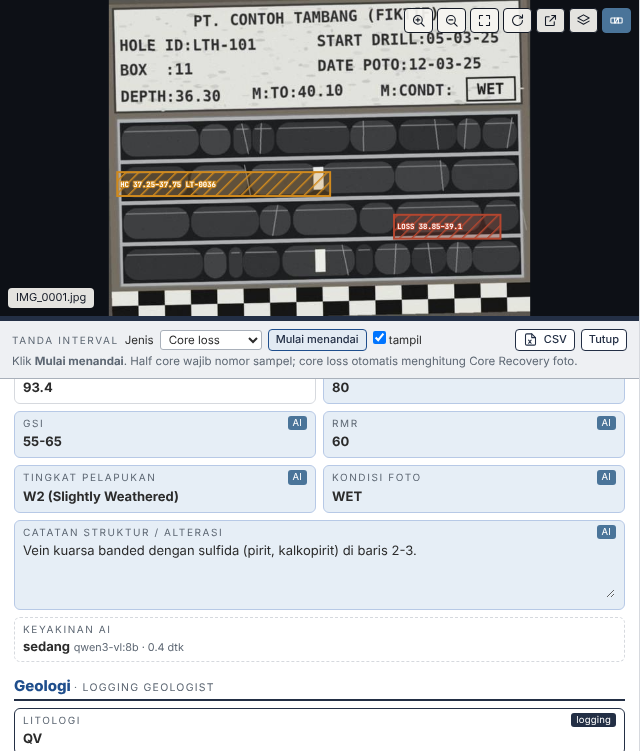
Gambar 22 – Tanda di foto: half core (oranye) dan core loss (merah). Core Recovery berlabel tanda.
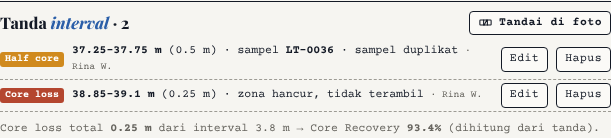
Gambar 23 – Daftar tanda di kartu foto, lengkap dengan Edit / Hapus.
✓ Cek: Core loss 0,25 m dari interval 3,80 m → Core Recovery 93,4%. Tabel menampilkan kolom Loss m dan Half m; Excel mendapat sheet Interval.
Half core wajib nomor sampel. Mengetik Recovery sendiri mengalahkan hitungan dari tanda sampai tanda foto itu diubah lagi. Bila pita tidak tepat di atas core, atur dulu Atur area core.
Latihan 6c
Overlay berlapis & edit interpretasi per baris
AI kini menilai tiap baris core dan membaginya mengikuti batas geologi aktual. Hasilnya, bersama assay dan logging, bisa ditumpuk sebagai lapisan di foto dan diedit langsung oleh geologist.
Buka IMG_0001.jpg, nyalakan overlay. Lapisan bawaan: Assay Au, Logging Lith, Pelapukan dan RQD per baris. Pita putus-putus = nilai AI yang belum diedit.
Pilih Preset → Geoteknik: RQD, Recovery, Rekahan/m dan Pelapukan per segmen. Batas kelas bisa diketik, warna kode bisa diklik di legenda.
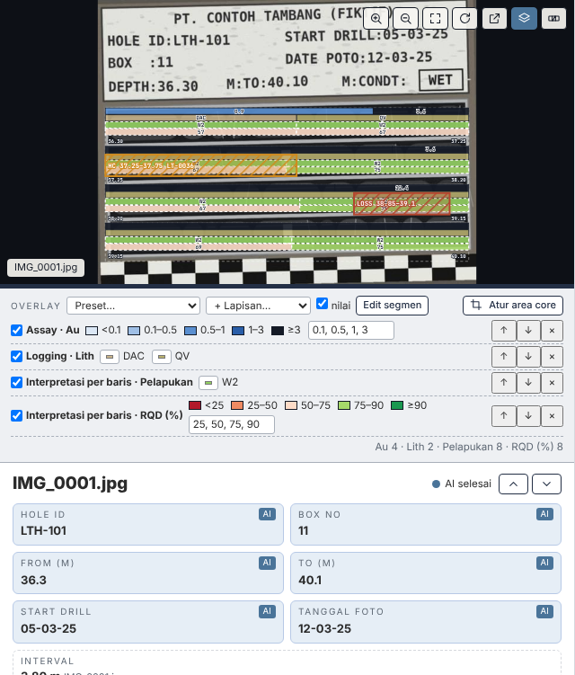
Gambar 24 – Lapisan bawaan: Au, Lith (logging), Pelapukan & RQD per baris (AI).
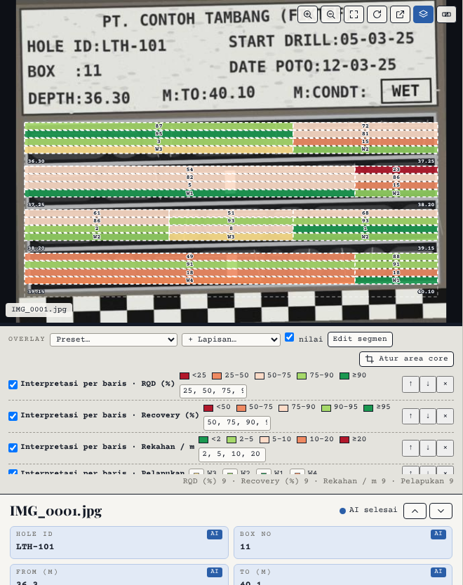
Gambar 25 – Preset Geoteknik.
Klik Edit segmen. Klik segmen pertama di baris 1 → ubah RQD menjadi 12, PelapukanW4, catatan "zona hancur" → Simpan. Label berubah dari AI menjadi diedit.
Tarik garis batas kuning di akhir segmen itu ke kanan: batas bergeser (dibulatkan 0,05 m) dan segmen sebelahnya ikut menyesuaikan.
Tarik di area kosong untuk menambah segmen manual; tombol Belah, Gabung, Hapus ada di formulir. Esc = selesai.
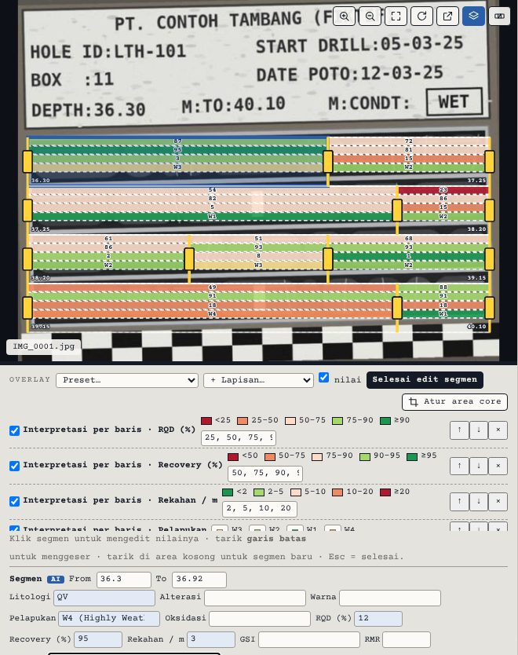
Gambar 26 – Mode Edit segmen: garis batas kuning bisa ditarik; formulir menampilkan semua nilai segmen.
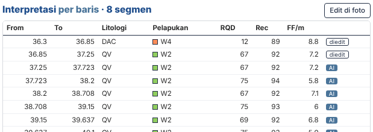
Gambar 27 – Tabel segmen di kartu foto; segmen yang disentuh geologist berlabel diedit.
✓ Cek: segmen yang diedit tetap sama setelah Analisis ulang; Excel mendapat sheet Segmen.
Latihan 7
Cari cepat & kueri kadar
Tekan Ctrl+K, ketik chalcopyrite. Hasil menunjukkan interval logging yang menyebut mineral itu beserta fotonya. ↑ ↓ lalu Enter untuk membuka.
Ganti dengan Au>=3. Hasil: semua interval assay dengan Au ≥ 3, diurutkan dari nilai tertinggi. Overlay assay menyala otomatis.
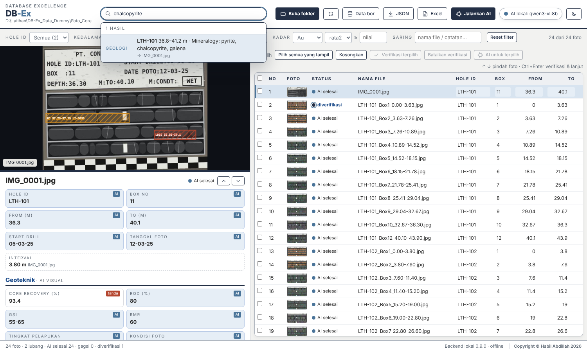
Gambar 15 – Cari teks: chalcopyrite.
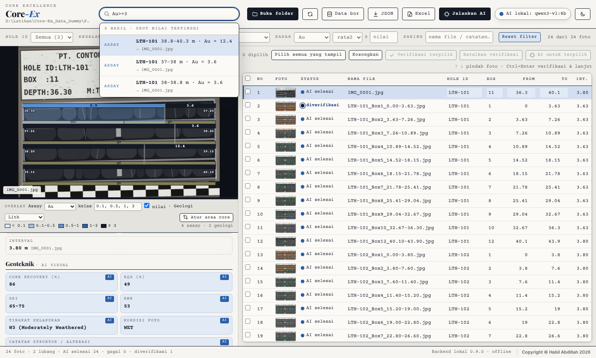
Gambar 16 – Kueri kadar Au>=3: 3 hasil, tertinggi 12,4 g/t.
Kotak cari juga mencari nama file, Hole ID, isian log dan nomor sampel. Kueri lain: Cu>0.3, Ag<5.
Latihan 8
Filter kadar
Di bilah filter: Kadar = Au, maks, ≥ 1. Tabel hanya menampilkan box yang punya sampel Au ≥ 1 g/t.
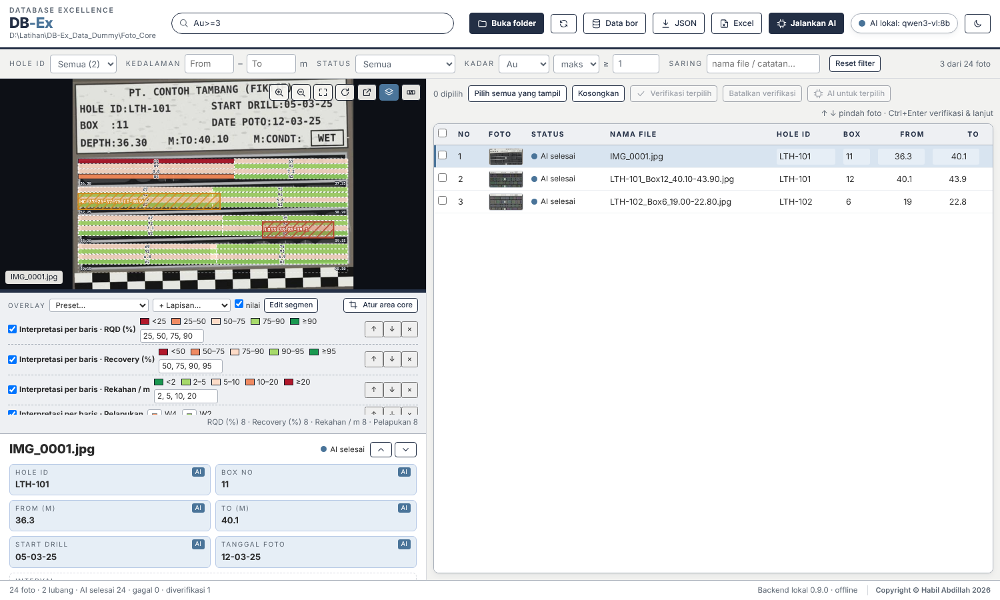
Gambar 17 – Filter Au maks ≥ 1: 3 dari 24 foto.
✓ Cek: penghitung kanan atas: 3 dari 24 foto. Klik Reset filter untuk kembali.
Latihan 9
Data baru: assay ulang per hole
Lab mengirim hasil analisa ulang LTH-102. File baru cukup diimport dengan cara Tambah / perbarui per hole: data LTH-102 diganti, LTH-101 tetap.
Data bor → tab Assay → Assay_Latihan_LTH-102_ulang.csv.
Header file ini sama dengan import sebelumnya, jadi pemetaan terakhir dipakai lagi (Au, Ag, Cu, Sample sudah terisi).
Klik Import.
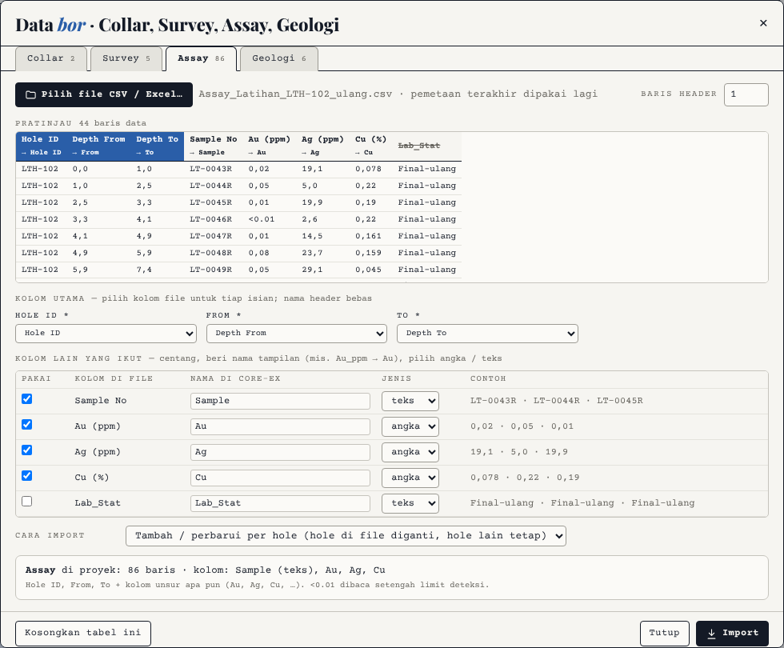
Gambar 18 – Pemetaan terakhir dipakai lagi.Gambar 19 – 44 baris LTH-102 diperbarui.
✓ Cek: Assay: 44 baris diimport · 1 hole. Data assay LTH-101 tidak berubah.
Latihan 10
Impor JSON lama & export Excel
JSON → Dashboard_lama\Geotech_Dashboard_LTH-102.json. Hasil dashboard lama dicocokkan per nama file foto: 2 foto cocok.
Excel → export semua foto atau hanya yang tampil sesuai filter.
Sheet Core Log berisi semua kolom, status AI, keyakinan AI dan siapa yang memverifikasi; nama file foto bisa diklik. Sel biru muda = isian AI yang belum diverifikasi. Kolom Sumber isian geologi menulis asal tiap isian (logging / manual / AI), dan ada kolom Au rata-rata / Au maks per foto.
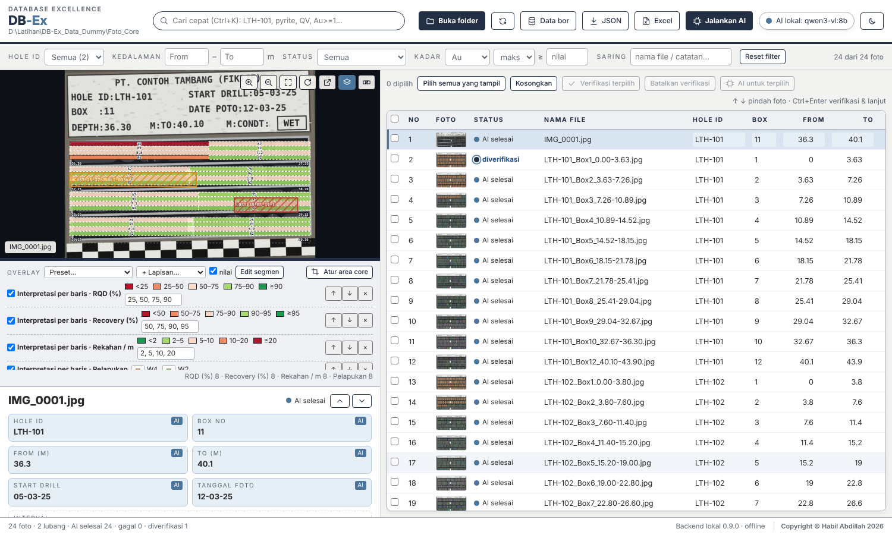
Gambar 20 – Kondisi akhir latihan.
Latihan 11
Kunci jawaban
Pertanyaan
Jawaban
Berapa foto dan lubang di folder?
24 foto, 2 lubang (LTH-101, LTH-102)
IMG_0001 itu foto apa?
LTH-101 box 11, 36,30–40,10 m
Zona berkadar tinggi?
LTH-101 zona QV 36,8–41,2 m, Au sampai 12,4 g/t
Hasil Au>=3?
3 interval: 12,4 · 3,6 · 3,6 g/t, semua di IMG_0001
Recovery IMG_0001 setelah core loss 38,85–39,10 m?
(3,80 − 0,25) / 3,80 = 93,4%
Lubang yang sudah dilogging?
Hanya LTH-101; isian geologi LTH-102 dari AI
Nilai di bawah limit deteksi?
18 nilai di import pertama, dibaca setengah limit (<0.01 → 0,005)
Bagian II · DB-Ex versi Qt
Empat ruang kerja dalam satu proyek
Bab 12–18 memakai DB-Ex versi Qt (DB-Ex-Qt-Setup-<versi>.exe, pre-release core-ex-qt-uji). Bilah atas punya empat tombol ruang kerja untuk folder proyek yang sama: Core box (Latihan 1–11), Singkapan (foto mapping / trenching), Borang (borang lapangan tulisan tangan) dan QAQC (QAQC sampel lab & data bor). Semua data tersimpan di _GCEx_Core di dalam folder proyek.
Ruang kerja
Untuk
Hasil
Core box
Foto core box, data bor, AI geoteknik, overlay assay
ketiga borang dalam satu PDF (dipecah per halaman)
QAQC\QAQC_Latihan.xlsx
Latihan 17–18 – QAQC Database
Catatan. Foto trench, scan borang, nama spotter / driller / rig / lubang, tanggal dan angka di bab ini fiktif. Tulisan tangan di scan contoh digambar ulang komputer. Jawaban AI pada gambar adalah contoh; di komputer Anda AI membaca borang yang sebenarnya dan hasilnya tetap wajib diperiksa.
Pilih jenis fitur di bilah gambar (Zona alterasi, Vein, Label zona, Label, Strike / dip, Channel sampel), klik ✎ Gambar, klik titik-titik di foto; Enter / klik ganda = selesai. ✦ SAM membuat batas zona otomatis dari satu klik di dalam zona.
3
Pilih garis Channel sampel; di tab Fitur isi tabel sampel (Sample ID, Dari, Ke, kadar per unsur) atau buka Sampel_Trench_TR01.txt, salin semua isinya lalu Tempel dari Excel. Garis dibagi per interval (diukur dari ujung kiri = collar, ke kanan = EOH) dan diwarnai kelas Au; komposit tertimbang panjang dihitung otomatis.
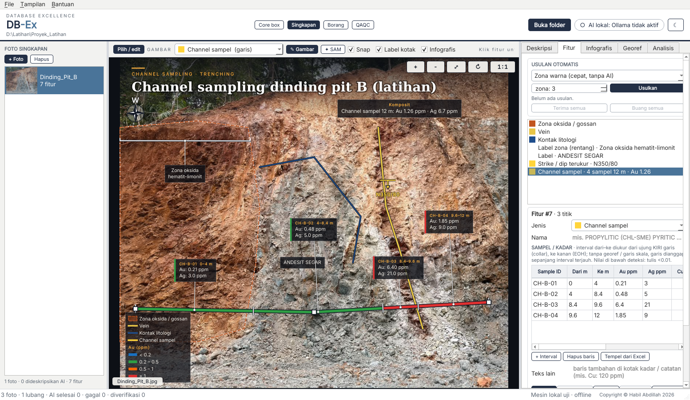
Gambar 28 – Ruang kerja Singkapan: zona argilik, vein, label, strike/dip N120/70 dan channel sampel 4 interval dengan kotak kadar.
4
Tab Infografis: gaya, judul, kompas arah pandang, warna kelas kadar. File → Ekspor infografis (Ctrl+E) menyimpan PNG / PDF siap laporan.
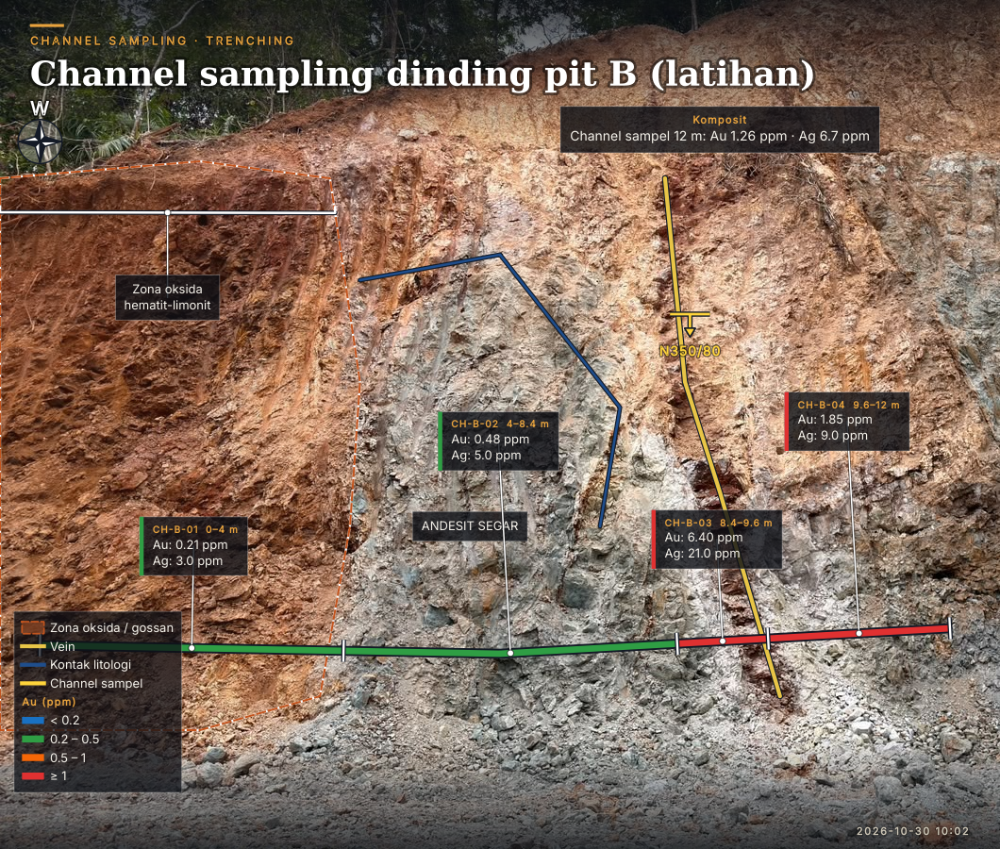
Gambar 29 – Infografis hasil ekspor: kotak kadar per interval, komposit, legenda kelas Au dan kompas.
5
Tab Georef: titik kontrol survey (u, v → E, N, RL) membuat foto berkoordinat. Ekspor STR / DXF, tabel sampel dan database channel (Collar, Survey, Assay, Geologi) bawaannya memakai koordinat georef; menempel ke topografi / DTM as-built hanya bila dipilih.
Koordinat ada di bidang foto; kemiringan yang terlihat di satu dinding adalah apparent dip. Rincian teknis georef, topografi dan Depth Anything ada di Panduan Teknis DB-Ex bagian 6c.
Latihan 13
Borang Ore Spotter: Loading Pit → ROM / Stockpile
1
Klik Borang. Pilih jenis Ore Spotter: Loading Pit → ROM / Stockpile, klik + Borang, pilih Borang\Borang_Loading_Pit_30Okt.jpg (foto / scan / PDF; PDF dipecah satu borang per halaman). Putar dengan ↻ bila miring.
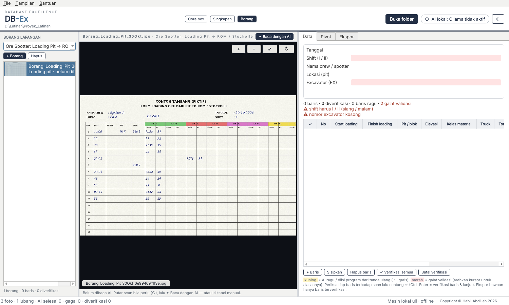
Gambar 30 – Borang baru: scan di tengah, tabel kosong di kanan.
2
Klik ✦ Baca dengan AI (Ollama lokal, 30–180 detik per borang). Bila AI gagal, tabel tidak diisi apa pun — tidak ada data contoh.
3
Program merapikan cara tulis cepat di lapangan dan menandainya kuning :
jam menit saja: 19.08 lalu 13 → 19:13; 23.35 → 03.53 lewat tengah malam;
nomor truk singkat: 7123 lalu 32 → 7132;
tanda ulang (〃, ", =, garis) → nilai baris atas; 〃 A1 di tujuan → ROM A1;
baris yang hanya mengganti Elevation tidak jadi baris; elevasinya dibawa ke baris berikutnya.
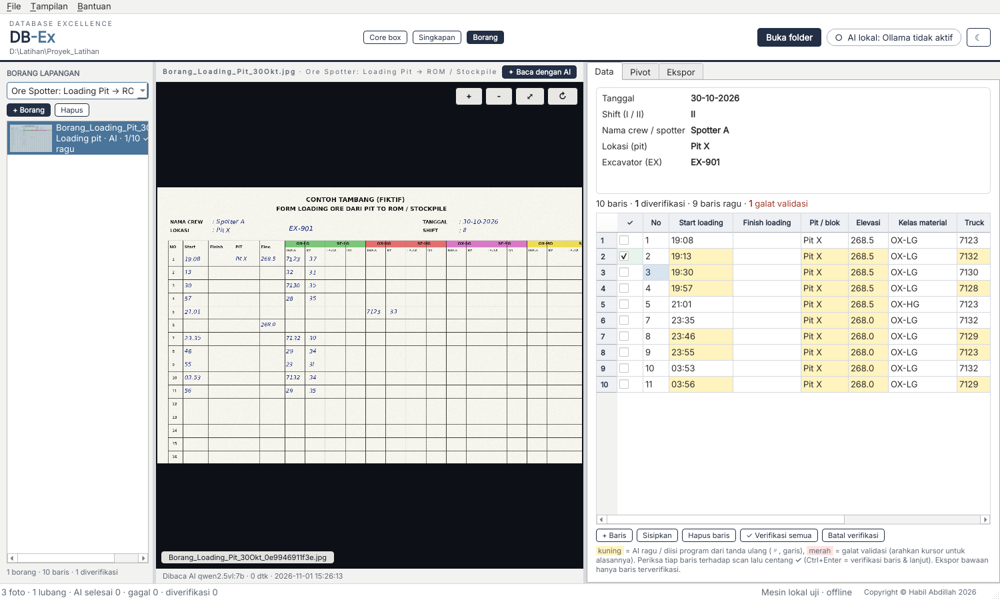
Gambar 31 – Hasil AI: kuning = AI ragu / diisi program, merah = galat validasi (tonase 3l bukan angka). Baris 2 sudah dicentang ✓.
4
Periksa berdampingan: cocokkan tiap baris dengan scan, perbaiki sel langsung di tabel (tersimpan otomatis), lalu centang ✓. Ctrl+Enter = verifikasi baris terpilih & lanjut ke baris berikutnya; ✓ Verifikasi semua untuk sekaligus.
Validasi (merah)
Contoh
Jam di luar shift / mundur
Shift I = DS 06:00–18:00, shift II = NS 18:00–06:00
Tonase
kosong, bukan angka, di luar 0–400 t
Kelas material
bukan OX-LG, SF-LG, OX-HG, SF-HG, OX-SG, SF-SG, SCAT, OX-MO, SF-MO
Nomor baris, truk, tujuan
nomor tidak urut, truk kosong / singkat tanpa nomor lengkap di atasnya
✓ Cek: setelah 3l diganti 31, ringkasan menulis validasi bersih. Kolom Tgl muat baris jam 03:53 = tanggal borang + 1 (shift II melewati tengah malam).
5
Tab Pivot: ritase & tonase per shift, per front (pit · elevasi · excavator) dan per tujuan dumping × kelas material.
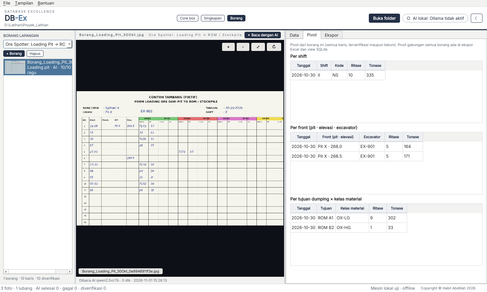
Gambar 32 – Pivot borang loading pit.
6
Tab Ekspor: Borang ini atau Semua borang jenis ini. Bawaannya hanya baris terverifikasi. Pilih Excel, CSV, SQLite (.db) atau MS Access (.accdb); database dan tabel dibuat otomatis.
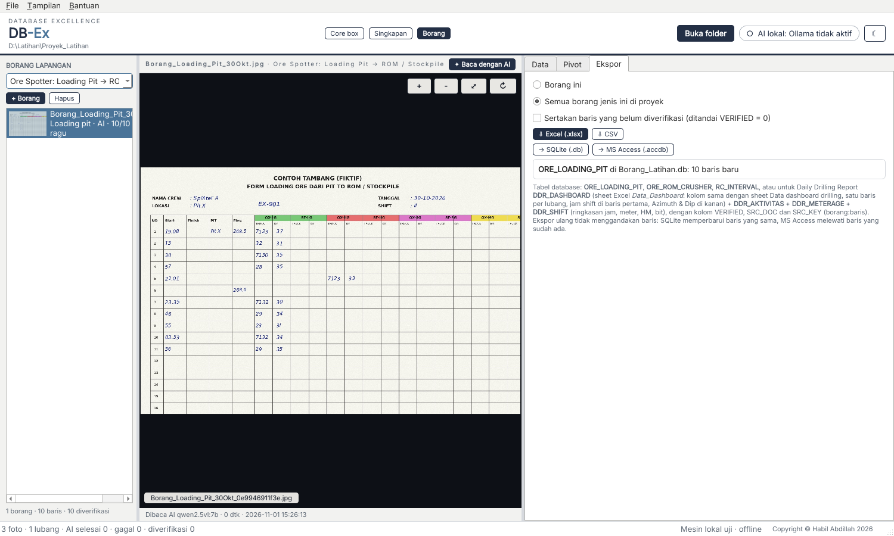
Gambar 33 – Ekspor ke SQLite: 10 baris baru di tabel ORE_LOADING_PIT.
Latihan 14
Borang Ore ke Stockpile / Crusher (Rehandling / Direct)
Borang spotter di ROM / crusher: Unit, Start / Finish Loading, Asal Material, Tujuan, Rehandling Tumpukan (sub-kolom yang dicentang), kelas material + ton (termasuk SCAT), Status Baru / Lama, Keterangan (Direct / Rehandling / OPP). Langkahnya sama dengan Latihan 13, dengan file Borang\Borang_ROM_31Okt.jpg.
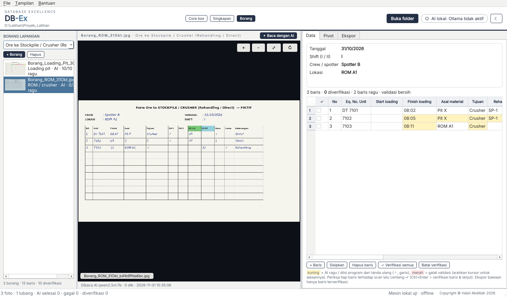
Gambar 34 – Borang ROM: DT 7101 → unit 7101, jam 05 → 08:05, tanda ulang 〃 dan = diisi dari baris atas.
Kolom turunan
Isi
Tanggal muat
tanggal borang, +1 hari untuk jam 00:00–11:59 di shift II
Oksida / Sulfida, Grade
dari kelas: OX-LG → OKSIDA, LG
Direct / Rehandling
dari Keterangan
Latihan 15
RC Drilling: Daily Drilling Report
1
Pilih jenis RC Drilling: Daily Drilling Report → + Borang → Borang\DDR_31Okt.jpg → ✦ Baca dengan AI. Satu borang berisi header dan dua tabel: Aktivitas (jam mulai–selesai + uraian) dan Meterage / lubang (From, To, Hole ID, Az, Dip). Pindah tabel di kotak Tabel:.
2
Isi Location (tidak tertulis di borang). Drill rig dirapikan ke Merek 00N (hansin - sdr - 101 → Hanjin 101) — nilai ini yang masuk kolom EqType dashboard. Hole ID selalu memakai garis bawah (XX-100-S-05 → XX_100_S_05).
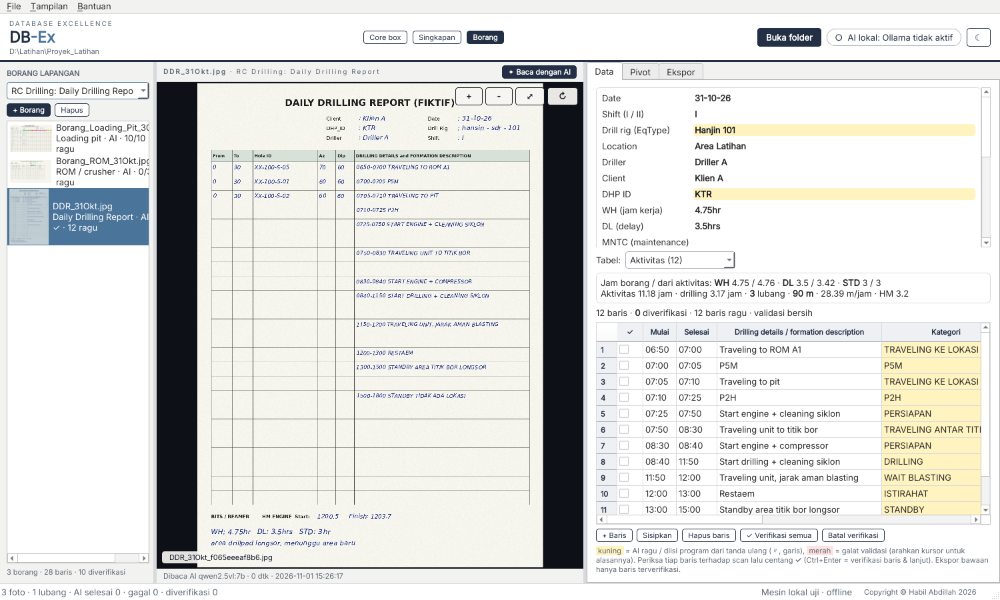
Gambar 35 – Tabel aktivitas: kategori diisi otomatis dari kata kunci (kuning), ringkasan jam borang vs aktivitas di atas tabel.
3
Kategori & kelompok jam (aturan site). Kategori bisa diganti dari daftar; kelompok jam ikut berubah.
Kelompok
Kategori
WH
DRILLING, TRAVELING ANTAR TITIK BOR, PERSIAPAN, P2H, P5M
DL
ISTIRAHAT, STANDBY, WAIT BLASTING, TRAVELING KE LOKASI (dan LAIN-LAIN)
MNTC / BD / RAIN
MAINTENANCE / BREAKDOWN / HUJAN
STD
STANDBY TIDAK ADA OPERATOR, STANDBY TIDAK ADA LOKASI
Kotak ringkasan membandingkan jam di borang dengan jumlah durasi aktivitas per kelompok (merah bila selisih > 0,5 jam), lalu total meter, jumlah lubang, meter per jam drilling dan HM running.
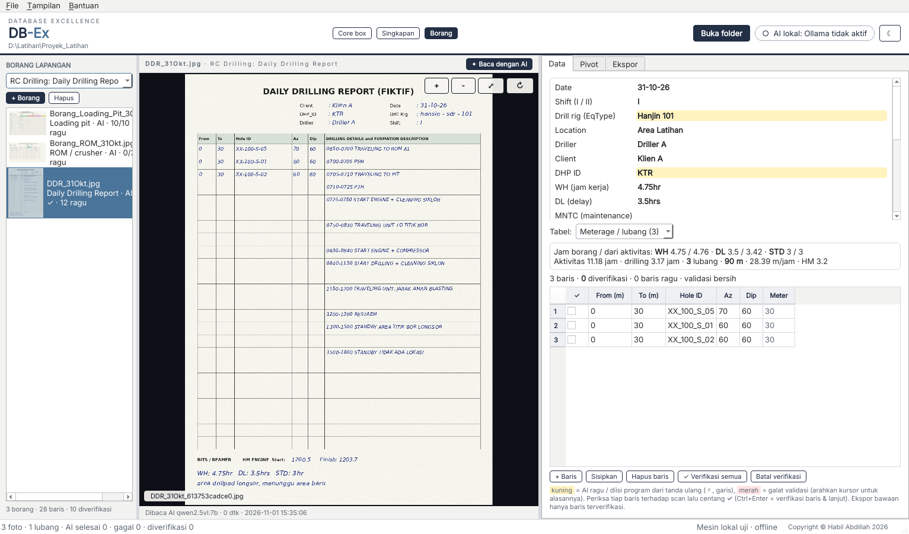
Gambar 36 – Tabel Meterage / lubang: Hole ID baku garis bawah, kolom turunan Meter.
✓ Cek: WH 4,75 / 4,76 · DL 3,5 / 3,42 · STD 3 / 3 → tidak ada yang merah; 3 lubang, 90 m, 28,39 m/jam drilling.
4
Tab Pivot: jam per kelompok, jam per kategori, meter per rig & shift, meter per lubang.
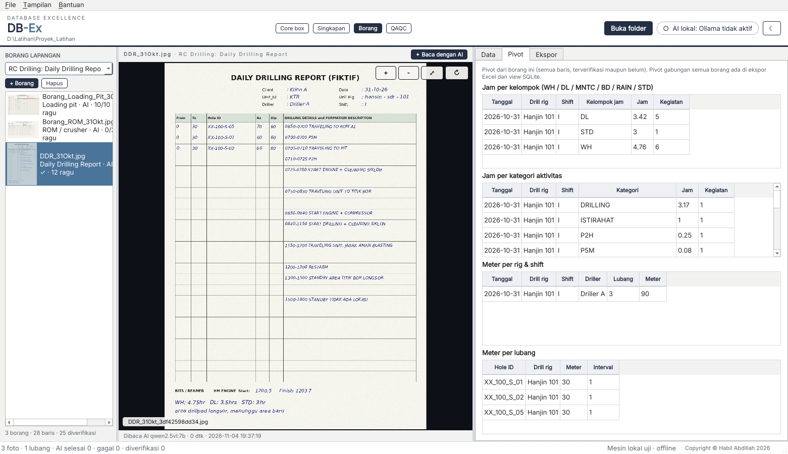
Gambar 37 – Pivot Daily Drilling Report.
Latihan 16
Ekspor ke database & dashboard drilling
Ekspor Excel Daily Drilling Report berisi sheet Data_Dashboard (pertama) dengan kolom sama seperti sheet Data dashboard drilling, lalu DDR_Aktivitas, DDR_Meterage, DDR_Ringkasan_Shift, sheet pivot dan Audit. Satu baris per lubang; jam shift hanya di baris pertama shift agar total jam tidak berlipat; Azimuth & Dip di dua kolom paling kanan.
Date
EqType
Location
Shift
Prospect
BHID
Interval_m
WH
Maint
BD
Delay
Standby
Rain
Remarks
Azimuth
Dip
31-Oct-2026
Hanjin 101
Area Latihan
S01
XX
XX_100_S_05
30
4.75
3.5
3
area drillpad longsor, menunggu area baru
70
60
31-Oct-2026
Hanjin 101
Area Latihan
S01
XX
XX_100_S_01
30
60
60
31-Oct-2026
Hanjin 101
Area Latihan
S01
XX
XX_100_S_02
30
60
60
Salin baris Data_Dashboard lalu tempel di bawah data terakhir sheet Data. Shift tanpa lubang tetap ditulis satu baris berisi jam saja.
Latihan 17
QAQC sampel lab: CRM, blank & duplikat
Ruang kerja QAQC memakai rumus workbook QAQC apa adanya: CRM Z = (Lab − Mean) / SD, |Z| ≤ 2 PASS, 2–3 WARNING, > 3 FAIL; blank gagal bila di atas cut-off 0,01; duplikat HARD = |O − D| / (O + D), lolos bila ≤ 10 % (RPD dan ARD ikut dihitung). Datanya tersimpan sendiri di _GCEx_Core\qaqc\qaqc.db.
1
Klik QAQC di bilah atas. Di kotak impor biarkan Workbook QAQC (semua sheet dikenali), klik Impor… dan pilih D:\Latihan\DB-Ex_Data_Dummy\QAQC\QAQC_Latihan.xlsx. Sheet Master_CRM, Assay_Import, CRM_Data, Blank_Data, Duplicate_Data dibaca sekaligus.
2
Baca laporan impor: CRM_Data: 48 baru, dst., dan peringatan ID ganda — data latihan sengaja berisi satu Sample_ID duplikat ganda. Impor ulang file yang sama tidak menggandakan baris (diperbarui per Sample_ID).
3
Tab Dashboard: penilaian per zona (Z7, Z8) untuk CRM, duplikat dan blank, plus kesimpulan keseluruhan. Di data latihan keduanya Perlu tindakan korektif karena ada CRM FAIL.
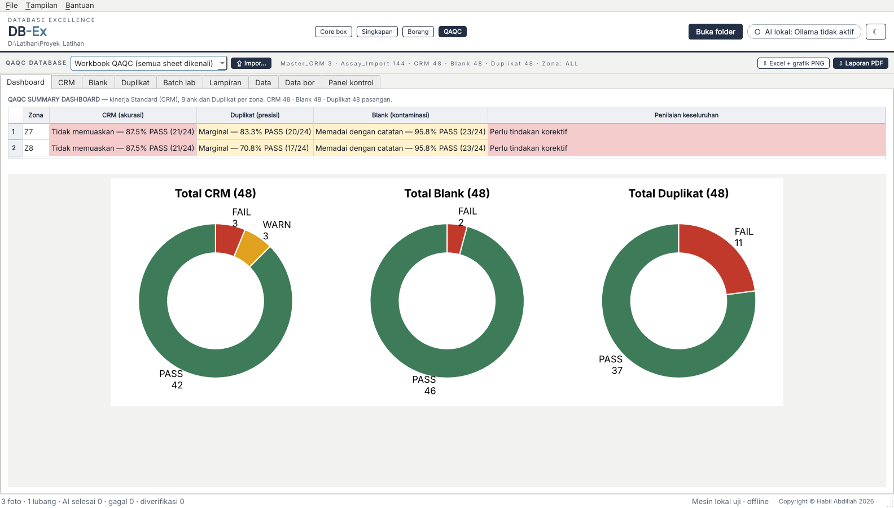
Gambar 38 – Dashboard QAQC per zona dan ringkasan PASS / WARN / FAIL.
4
Tab CRM: ringkasan per zona × CRM (n, rata-rata, bias, CV) dan grafik kontrol dengan garis certified, ±2 SD dan ±3 SD. Temukan titik merah CRM-A di Z8 yang nilainya mendekati CRM-B: CRM tertukar saat insersi. Lihat batch-nya di tab Lampiran → Appendix A.
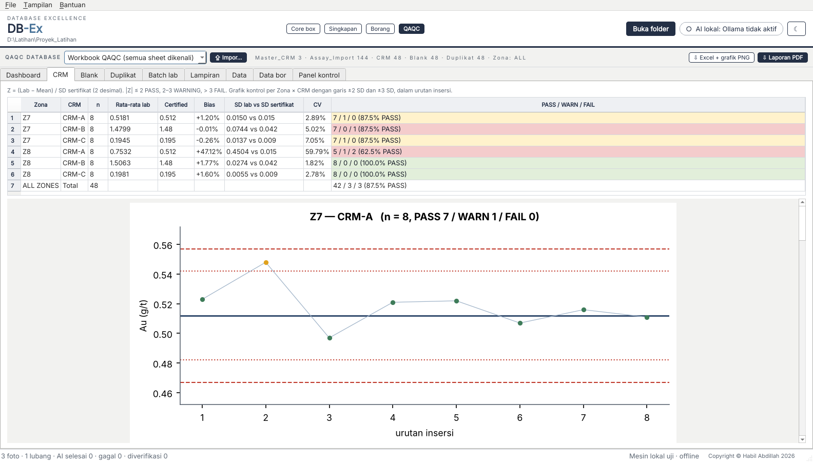
Gambar 39 – Ringkasan dan grafik kontrol CRM per zona.
5
Tab Duplikat: ringkasan per zona × kelas kadar (≤ 0,10, 0,10–0,30, > 0,30) dan per tipe (lapangan / coarse / pulp). Grafiknya: scatter 1:1 ±HARD dengan R², plot presisi, dan bias RPD. Duplikat lapangan di data latihan sengaja lebih berderau dari coarse / pulp.
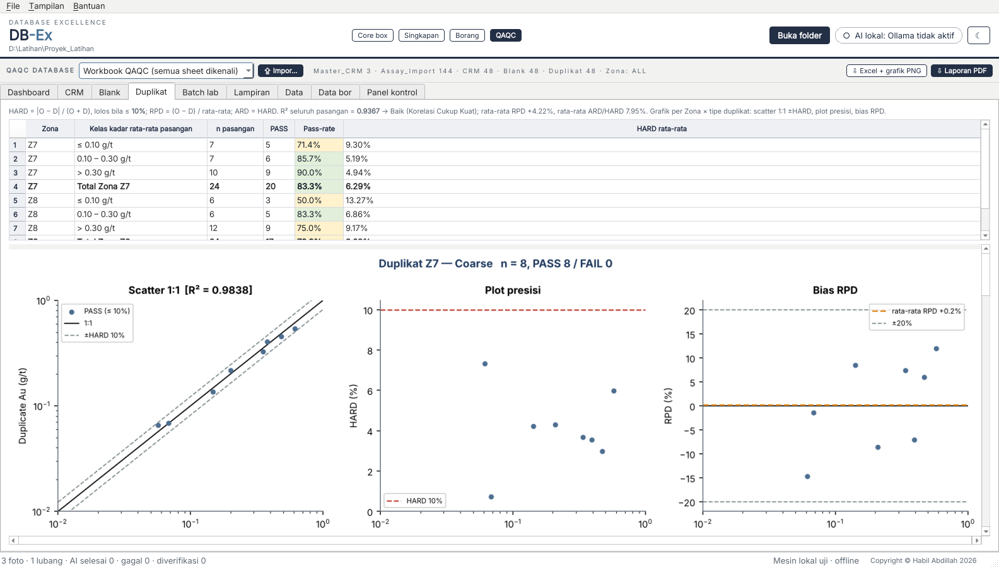
Gambar 40 – Duplikat: ringkasan kelas kadar, scatter 1:1, plot presisi dan bias RPD.
6
Tab Blank (urutan blank terhadap cut-off) dan Batch lab (PASS / WARNING / FAIL per Batch_ID dari Assay_Import) untuk menelusuri batch yang perlu re-assay.
7
Tab Data → Master_CRM: ubah Certified_SD CRM-A dari 0,015 menjadi 0,030, klik Simpan Master_CRM. Semua tab dihitung ulang: WARNING CRM-A hilang, tetapi CRM yang tertukar tetap FAIL. Kembalikan nilainya ke 0,015.
8
Tab Panel kontrol: pilih Target zona Z7 → Simpan & hitung ulang. Dashboard, ekspor dan laporan hanya memuat Z7. Batas lain (cut-off blank, HARD maksimum, batas pass-rate, kelas kadar, syarat Lampiran C) diatur di sini; Kembalikan bawaan untuk nilai awal.
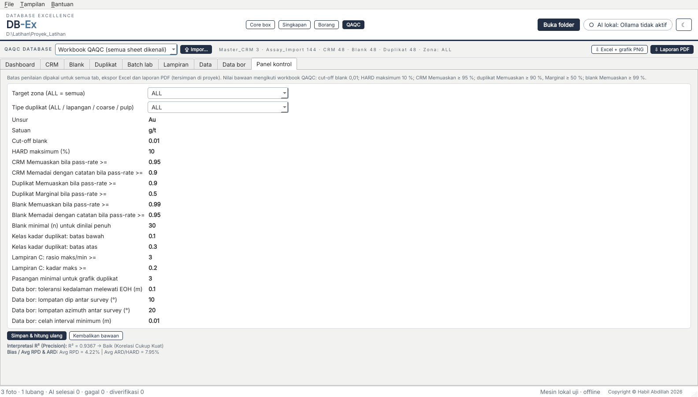
Gambar 41 – Panel kontrol: batas penilaian dan interpretasi R².
9
Input manual & tempel dari Excel. Tab Data → pilih CRM_Data, Blank_Data, Duplicate_Data atau Assay_Import. Klik ganda sel untuk mengubah; + Baris menambah baris di bawah baris terpilih; Hapus baris menghapus baris terpilih. Untuk banyak baris: blok sel di Excel → Ctrl+C → klik tabel DB-Ex → Ctrl+V (atau Tempel dari Excel). Bila blok yang disalin ikut baris judul (Sample_ID, Standard_Name, Lab_Grade, …), kolom dicocokkan menurut judulnya dan baris ditambahkan di bawah; tanpa judul, sel ditempel mulai dari sel terpilih.
10
Coba: salin tiga baris Z8_MAN_001 · CRM-B · 1,47, sebuah Sample_ID yang sudah ada, dan Z8_MAN_003 · CRM-C · abc. Sel merah langsung muncul: Sample_ID ganda (keduanya ditandai) dan Lab_Grade bukan angka. Simpan tabel menolak menyimpan selama masih ada sel merah — perbaiki atau hapus barisnya dulu. Koma desimal dan <0.01 diterima seperti saat impor. Di sini klik Batal untuk membuang perubahan latihan.
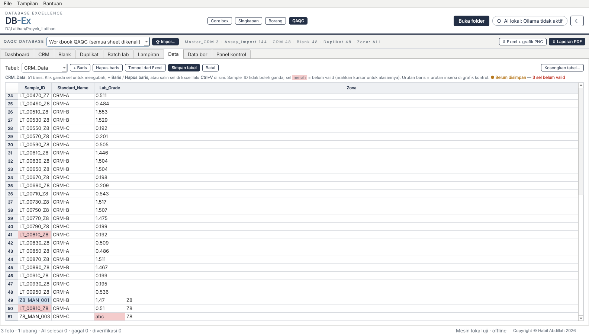
Gambar 42 – Tabel CRM_Data setelah tempel dari Excel: Sample_ID ganda dan angka tidak valid ditandai merah, status Belum disimpan.
Impor vs input manual. Impor file = upsert: Sample_ID baru ditambah, yang sudah ada diperbarui, tidak ada yang terhapus. Simpan tabel menyimpan isi tabel di layar apa adanya: baris yang dihapus di layar ikut terhapus, dan urutan baris menjadi urutan insersi di grafik kontrol. Setelah disimpan, semua tab dihitung ulang. Bila pindah tabel sebelum menyimpan, DB-Ex bertanya dulu. Peringatan (bukan galat): Sample_ID yang juga ada di tabel CRM / Blank lainnya, atau Standard_Name yang belum ada di Master_CRM.
Latihan 18
QAQC data bor, ekspor Excel & laporan PDF
1
Tab Data bor → Periksa data bor. DB-Ex memeriksa Collar, Survey, Assay dan Geologi yang sudah diimpor di ruang kerja Core box (Latihan 2). MERAH = kesalahan struktur yang harus diperbaiki di database sumber sebelum komposit / model (interval tumpang-tindih, Sample ID ganda, tanda dip terbalik, survey / assay tanpa collar); KUNING = perlu diperiksa (melewati EOH, EOH kosong, lompatan survey); INFO = catatan (celah interval, collar tanpa assay).
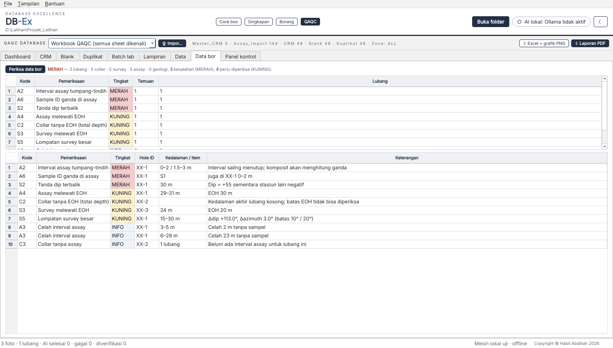
Gambar 43 – QAQC data bor: ringkasan per kode dan daftar temuan per lubang (contoh data dengan kesalahan sengaja).
2
⇩ Excel + grafik PNG: satu file .xlsx (QAQC_Dashboard, CRM_Data, CRM_Summary, Duplicate_Data, Duplicate Summary, Blank_Data, Report_Appendix, Batch_Summary, Data_Bor_QAQC, Control_Panel, sheet grafik) dan folder <nama>_grafik\ berisi semua grafik PNG.
3
⇩ Laporan PDF: isi judul, penyusun dan proyek, lalu simpan. Laporan A4 bernomor halaman: status kesehatan data, Ringkasan Eksekutif (lampu lalu lintas, angka utama, tindakan prioritas), Integritas Data Bor, akurasi CRM, kontaminasi blank, presisi duplikat, ringkasan per batch, dashboard per zona, serta Lampiran A–D.
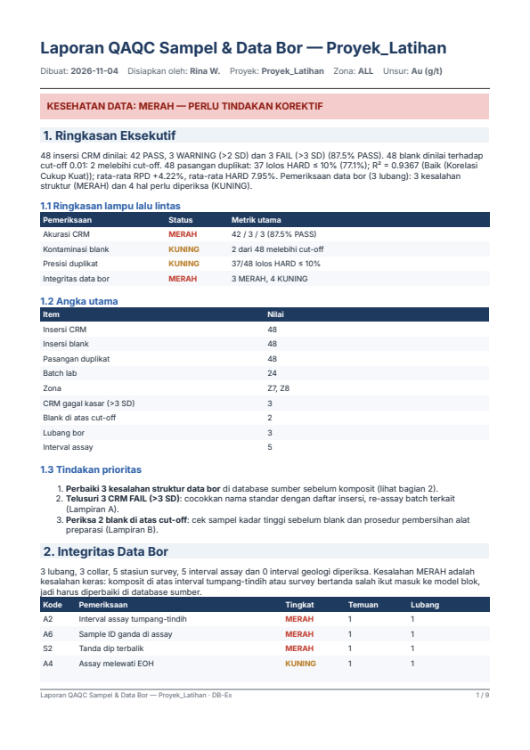
Gambar 44 – Laporan PDF, halaman 1.
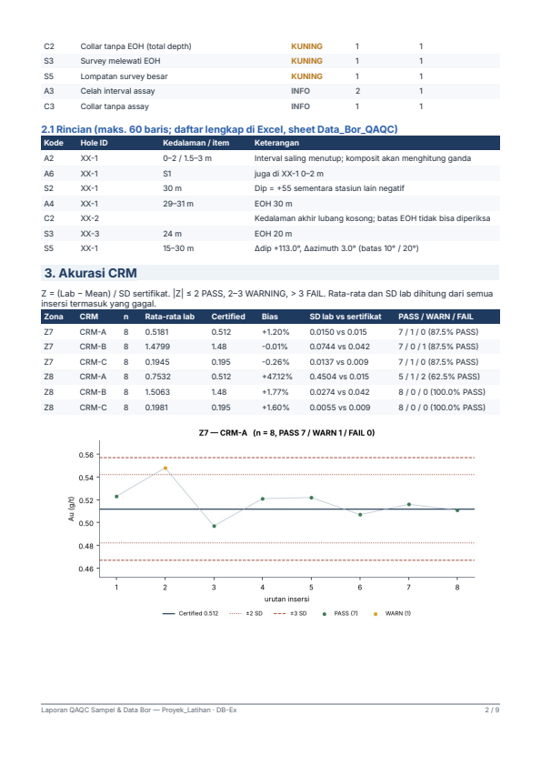
Gambar 45 – Laporan PDF, grafik kontrol CRM.
QAQC menilai data, bukan memperbaikinya. Sampel / batch yang gagal ditelusuri ke lab dan database sumber; workbook QAQC lama dengan Sample_ID ganda perlu dibereskan karena hanya baris terakhir yang disimpan.
Setiap tabel punya kolom VERIFIED, SRC_DOC (nama borang) dan SRC_KEY (borang:baris). Ekspor ulang tidak menggandakan baris: SQLite memperbarui baris yang sama, MS Access melewati baris yang sudah ada. CSV Daily Drilling Report = satu ZIP berisi satu CSV per tabel. MS Access butuh driver Access 64-bit (MS Office 64-bit / Access Database Engine).
Hasil AI adalah usulan. Data yang masuk database / dashboard hanya baris yang sudah diverifikasi geologist atau petugas data terhadap scan aslinya.
Masalah umum
Gejala
Penyebab / solusi
Titik merah "Ollama tidak aktif"
Klik Jalankan AI → Jalankan Ollama. Bila tertulis "Ollama belum terpasang", pasang OllamaSetup.exe dulu.
"Belum ada model vision"
Cek ollama list. Ada qwen3-vl → perbarui Ollama ke 0.12.7+ (model tetap). Tidak ada → ollama pull qwen3-vl:8b atau salin folder model.
AI sangat lambat
Berjalan di CPU. Pakai qwen3-vl:4b, ukuran foto 1024 px, atau komputer dengan kartu grafis NVIDIA.
Banyak foto "AI gagal"
Arahkan kursor ke label untuk melihat sebab. Biasanya Ollama tertutup atau memori habis; jalankan AI lagi (yang gagal diulang).
Data lab kosong di kartu foto
Hole ID / From / To foto belum terisi, atau Hole ID berbeda dengan file lab. Perbaiki di kartu; data dicocokkan ulang.
"Tidak ada baris yang bisa diimport"
Baris header salah atau kolom From / To bukan angka.
Au>=1 → "Unsur tidak ada"
Pakai nama di DB-Ex saat import (Au, bukan Au (ppm)).
Pita overlay tidak pas
Atur area core, sesuaikan kotak & jumlah baris, simpan untuk semua foto lubang ini.
Borang: "AI gagal membaca borang"
Ollama tertutup / model belum ada / memori habis. Tabel sengaja dibiarkan kosong; jalankan lagi, atau isi manual (+ Baris).
Borang: banyak sel merah jam
Shift di header salah (I / II) atau jam memang di luar shift (lembur). Perbaiki header; sisanya periksa terhadap scan.
Borang: ekspor "Tidak ada baris"
Baris belum diverifikasi. Centang ✓ / Verifikasi semua, atau centang Sertakan baris yang belum diverifikasi.
Ekspor MS Access gagal
Driver Access 64-bit belum terpasang; pasang Microsoft Access Database Engine 2016 x64, atau ekspor ke SQLite / Excel.
QAQC: "CRM tanpa data di Master_CRM"
Nama Standard_Name di CRM_Data tidak ada di Master_CRM (beda ejaan / spasi). Tambahkan di tab Data → Master_CRM.
QAQC: grafik tidak muncul
Grafik dimuat saat tab dibuka; tunggu beberapa detik. Duplikat butuh minimal 3 pasangan per zona × tipe (Panel kontrol).
"Backend tidak aktif"
Bantuan → Buka folder log, kirim backend.log ke admin.